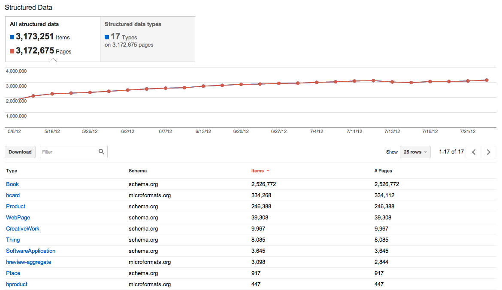
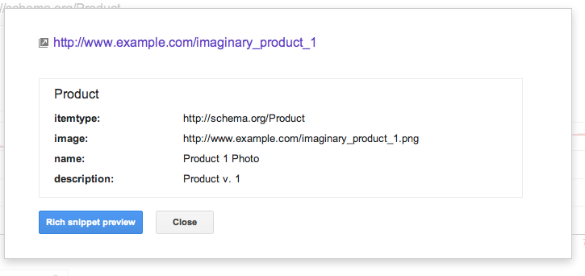

Visualization techniques can also be used in the creation of reports that provide descriptive statistics for a dataset. Often visualizations are displayed in a dashboard that enables user interaction. Several tools exist that can be used for the construction of dashboards including Google Webmaster tools [19], Information Workbench [11] and eCloudManager [20]. We saw earlier some of the visualization capabilities of Information Workbench. The eCloudManager is a specific solution for data centres and cloud management. In the rest of this section we focus on Google Webmaster tools and how they can be used to provide webmasters with information about structured data embedded in websites that is recognised by the Google search engine.
Google Webmaster tools can be used to provide general data about a website, in terms of its traffic and how it is indexed by the Google search engine. As a part of this, Google Webmaster tools provides dashboards on the structured data within a website. The Structured Data Dashboard has three levels. A site-level view aggregates the structured data across all pages according to the classes defined in the vocabulary. An item-type-level view provides separate details for each type of resource. A page-level view shows attributes of every type of resource in a given web page.

Figure 34: A site-level view showing the number of resources of different types that have been detected. The chart shows how the amount of structured data is evolving over time [21].

Figure 35: A page-level view showing the metadata of the imaginary product featured on that page of the website. The detected metadata defines the resource type, image, name and description [21].